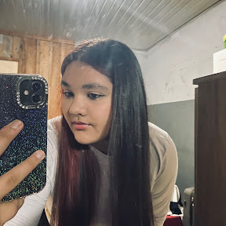

curiculo
Estudante do Curso Técnico em Desenvolvimento de Sistemas
Informações Pessoais
Idade: 15 anos
Cidade: Manoel Ribas- PR
Email: yasmim.vilela@escola.pr.gov.br
Telefone: (00) 00000-0000
Objetivo
Busco minha primeira oportunidade para aprender, desenvolver minhas habilidades e ganhar experiência na área de tecnologia.
Formação
Curso: Técnico em Desenvolvimento de Sistemas
Instituição: Colégio Estadual Profª Reni Correia Gamper
Ano: 1º ano Formação de docentes
Conhecimentos
- Saberes Disciplinares
- Saberes Pedagógicos e das Ciências da Educação
- Saberes Curriculares
- Saberes da Prática
Habilidades
- Trabalho em equipe
- Responsabilidade
- Organização
- Vontade de aprender
Projetos
Meu primeiro site
Projeto desenvolvido em sala utilizando HTML e CSS para praticar a criação de páginas web.
Expreriência
Coordenação